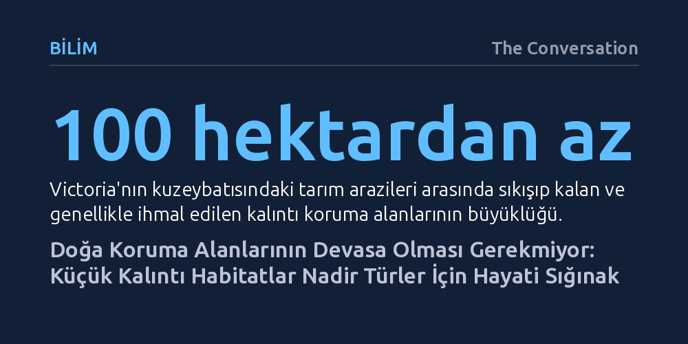

BILIM · The Conversation · 2026-10-12
Avustralya'da keşfedilen kanatsız yeni bir çekirge türü, 100 hektardan küçük kalıntı arazilerin bile nadir canlılar için hayati koruma alanları olduğunu ortaya koydu. Habitat parçalanmasına rağmen bu küçük cepler, hem hassas böcek popülasyonlarını yaşatıyor hem de ekosistemin erken ilkbahardaki temel besin zincirini ayakta tutuyor.
Doğa korumanın yalnızca yüz binlerce hektarlık devasa milli parklarla sınırlı olmadığını, tarım arazilerinin kıyısında unutulmuş küçücük ceplerin bile kritik türleri yok olmaktan kurtarabileceğini gösteriyor.

Doğa koruma alanı denildiğinde çoğu insanın aklına yaban hayatın özgürce dolaştığı, uçsuz bucaksız milli parklar gelir. Kuşkusuz bu devasa alanlar büyük memelileri korumak, yangınları yönetmek ve istilacı yabani otlarla mücadele etmek açısından vazgeçilmezdir. Ancak yoğun tarım yapılan bölgelerde yüz binlerce hektarlık alanları korumaya ayırmak her zaman mümkün olmuyor.
Örneğin Avustralya'nın kuzeybatı Victoria bölgesindeki tarım kuşağında, doğal örtüsünü koruyabilmiş kalıntı alanların büyüklüğü çoğu zaman 100 hektarın bile altında kalıyor. Çoğunlukla göz ardı edilen, hatta çöp dökülen ya da yabani otların istilasına uğrayan bu küçük cepler değersiz sanılıyor. Oysa yeni bulgular, küçük canlıların hayatta kalabilmesi için bu minik kalıntıların tahminlerin çok ötesinde bir öneme sahip olduğunu kanıtlıyor.
Batı Victoria'da yürütülen son araştırmada bilim insanları, daha önce tanımlanmamış yeni bir kibrit çekirgesi türünü ortaya çıkardı: Murray Mallee kibrit çekirgesi (*Keyacris bungunnia*). Bu tür, adını Pleistosen döneminde bölgede yer alan devasa antik Bungunnia Gölü'nden alıyor ve geçmişte bu gölün kıyılarında sıçradığı tahmin ediliyor.
İnce ve çöp şişi andıran gövde yapılarıyla Avustralya'ya özgü olan kibrit çekirgelerinin yaklaşık 250 türü bulunuyor. Sanılanın aksine tarım zararlısı olmayan bu böcekler, yerli bitkilerle beslenerek ekosistemin doğal dengesini destekliyor. En ayırt edici özellikleri ise yetişkinliğe ulaştıklarında dahi kanatlarının olmaması. Kanatsız oldukları için doğdukları alandan uzaklaşamıyorlar; araştırma da incelenen her popülasyonun diğerinden genetik olarak tamamen farklılaştığını ortaya koyuyor.
Kanatsız olmak, kesintisiz habitat koşullarında türlerin yayılmasına engel değildi. Nitekim geçmiş araştırmalar, bir kibrit çekirgesi türünün nesiller boyunca Victoria'dan Tazmanya'ya geçtiğini, bir diğerinin ise Nullarbor Ovası'nı aşarak 2.200 kilometre yol katettiğini gösteriyor. Ancak insan eliyle parçalanan modern tarım arazilerinde bu doğal yayılım imkansız hale geliyor.
Habitatlar birbirinden kopuk küçük adalara dönüştüğünde; yerel bir yangın, kuraklık ya da aşırı otlatma bütün bir popülasyonu haritadan silebiliyor. Uçma yeteneği olmayan ve başka bir alana göç edemeyen canlılar için bu izolasyon ölümcül bir risk barındırıyor. Bu nedenle küçük bir kalıntı alanda bir kibrit çekirgesi popülasyonuna rastlamak, oranın bozulmamış ve yüksek kaliteli bir ekosistem sunduğunun en net göstergesi kabul ediliyor.
Bu küçük sığınakların önemi yalnızca çekirgelerle sınırlı değil. Murray Mallee çekirgesinin bulunduğu alanlardan birinde, nesli tehlike altındaki Eltham bakır kelebeğinin bilinen en büyük popülasyonu keşfedildi. Üstelik bu alanları korumak devasa bütçeler veya karmaşık mühendislik projeleri gerektirmiyor; temel besin bitkilerini ayakta tutmak ve yabani ot baskısını engellemek küçük canlıların çoğalması için yeterli oluyor.
Melbourne yakınlarında yeniden bitkilendirilen alanlara ve Euroa arboretumuna nakledilen çekirge popülasyonlarının hızla çoğalması, bu yöntemin başarısını kanıtlıyor. Ayrıca kibrit çekirgeleri; kış sonu ve erken ilkbaharda diğer böcekler henüz yumurtadan çıkmamışken örümcekler, kuşlar ve diğer yırtıcılar için hayati bir protein kaynağı oluşturuyor. Tarlaların kenarında unutulmuş yüz hektarlık küçük cepleri korumak, ekosistemin temel taşlarını ayakta tutmanın en pratik yolunu sunuyor.